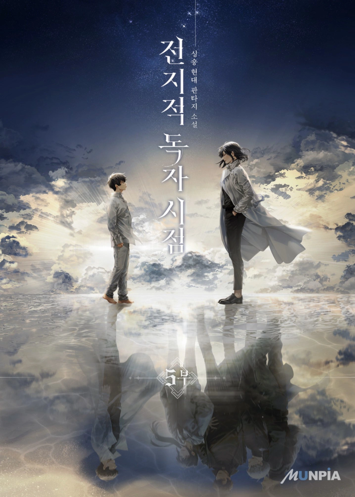
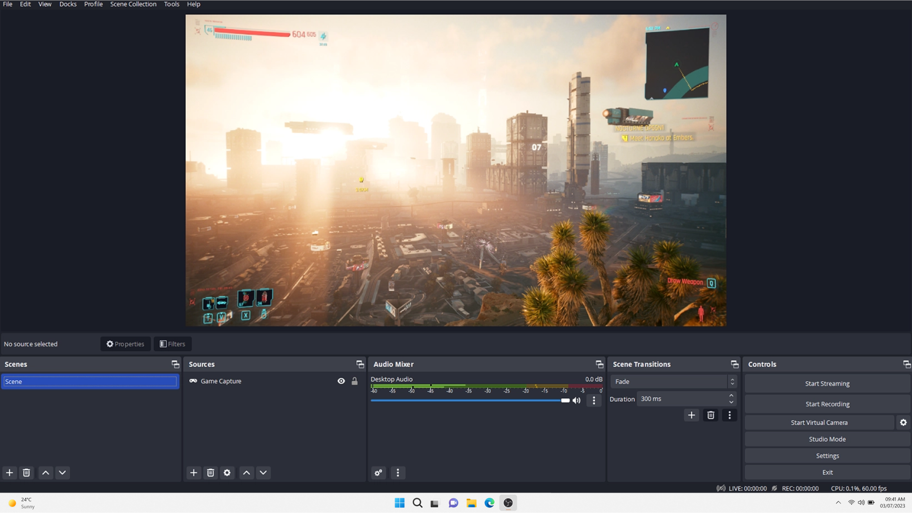

My Interest
Gaming & Storytelling
 I enjoy a wide range of games, especially fantasy open-world, story-based shooters, MOBAs, and multiplayer games that I can play with friends.
Gaming helps me build strategic thinking, teamwork, and creativity. I'm also exploring how to turn this passion into something profitable in the future.
I enjoy a wide range of games, especially fantasy open-world, story-based shooters, MOBAs, and multiplayer games that I can play with friends.
Gaming helps me build strategic thinking, teamwork, and creativity. I'm also exploring how to turn this passion into something profitable in the future.
Reading Fantasy & Manhwa
 I love reading fantasy-themed manhwa. These stories expand my imagination and offer lessons that go beyond academic learning, especially about resilience, character growth, and seeing the world from new perspectives.
AI & Tech Curiosity
 I’m fascinated by how fast Artificial Intelligence is evolving. I believe its potential goes far beyond what we can imagine right now, and I’m determined to be part of this transformation.
I'm also interested in exploring cloud computing and its impact on the tech industry.
I’m fascinated by how fast Artificial Intelligence is evolving. I believe its potential goes far beyond what we can imagine right now, and I’m determined to be part of this transformation.
I'm also interested in exploring cloud computing and its impact on the tech industry.
Exploring Personal Growth
 As someone passionate about gaming, I'm actively thinking of ways to turn that interest into value, whether through content creation, game development, or data analysis in the gaming industry. I'm also working on building an online presence, starting with this portfolio, as I understand how important visibility is in tech.